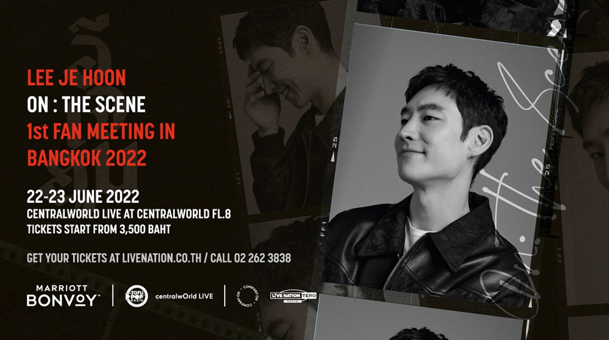
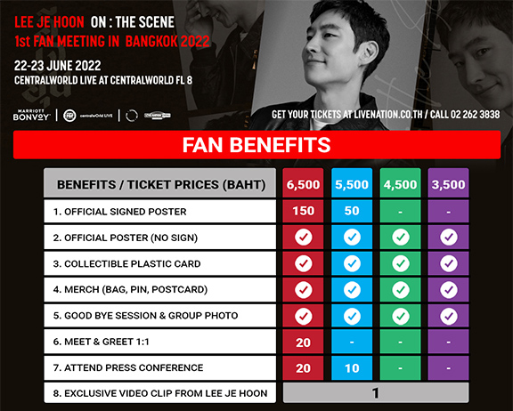

Online Reservation System
LEE JE HOON, ON: THE SCENE 1ST FAN MEETING IN BANGKOK 2022

หมายเหตุและเงื่อนไข
1. ผู้โชคดีต้องนำบัตรเข้าชมการแสดงและบัตรประชาชนหรือหนังสือเดินทางมาแสดงเพื่อลงทะเบียนในการรับสิทธิ์
2. สำหรับผู้ที่ได้รับสิทธิพิเศษ Merch และ Official Signed Poster(ศิลปินเซ็นไว้แล้ว) หรือ Official Poster รับที่จุดลงทะเบียนหน้างานหลังจบการแสดงเท่านั้น
3. สำหรับผู้ที่ได้รับสิทธิพิเศษ Good Bye Session & Group Photo หลังจบการแสดงให้อยู่ในพื้นที่ชมการแสดงก่อน การถ่ายรูป Group Photo จะแบ่งเป็นกลุ่มละประมาณ 200 ท่าน
4. สำหรับสิทธิพิเศษ Meet & Greet 1:1 กิจกรรมจะเริ่มก่อนการแสดง ทางผู้จัดจะนัดหมายล่วงหน้าประมาณ 1 สัปดาห์ก่อนการแสดง ท่านจะได้พบปะและถ่ายรูปกับศิลปินเป็นเวลาไม่เกิน 1 นาที
ผู้โชคดีจะต้องมาลงทะเบียนหน้างานตามเวลานัดหมาย และผ่านการตรวจ ATK หน้างาน และต้องปฎิบัติตามมาตรการป้องกัน การแพร่ระบาดของโควิด-19 จะมีการติดตั้งฉากใสกั้นระหว่างศิลปินและผู้โชคดี
5. สำหรับผู้ที่ได้รับสิทธิพิเศษในการร่วมงานแถลงข่าว จะได้รับการติดต่อกลับจากเจ้าหน้าที่ เพื่อแจ้งวัน เวลา และสถานที่สำหรับวันแถลงข่าวอีกครั้ง ประมาณ 1 สัปดาห์ล่วงหน้าก่อนวันงาน
6. สำหรับผู้ที่ได้รับสิทธิพิเศษ Exclusive Video จะได้รับ Video ของคุณ อี เจ ฮุน ส่งผ่านทาง e-mail
7. เพื่อความปลอดภัยระหว่างเข้าร่วมกิจกรรม ผู้เข้าร่วมกิจกรรมต้องสวมใส่หน้ากากอนามัยให้ครอบคลุมทั้งจมูกและปากตลอดเวลา และขอความร่วมมืองดสัมผัสกับศิลปินทุกกรณี
8. โปรดติดตามรายชื่อผู้โชคดีและได้รับสิทธิพิเศษต่างๆ ทาง Facebook @Livenationth
9. ผู้โชคดีจะต้องมารับสิทธิ์ตามเวลาและสถานที่ที่ผู้จัดกำหนด หากท่านไม่มารับสิทธิ์หรือไม่สามารถติดต่อได้ให้ถือว่าท่านสละสิทธิ ทางผู้จัดจะไม่ชดเชยให้ไม่ว่าในกรณีใดๆ ทั้งนี้คำตัดสินของทีมงานถือเป็นที่สิ้นสุด

คนขับแท็กซี่สุดหล่อสายโหด “อีเจฮุน” จากซีรี่ส์ Taxi Driver เตรียมจัด แฟน มีตติ้ง สุดเอ็กซ์คลูซีฟ ในเมืองไทย ครั้งแรก! 22-23 มิ.ย.นี้
เปิดขายบัตร 24 เม.ย. 65 ที่ไทยทิคเก็ตเมเจอร์
สาวไทยเตรียมหวีดให้ดังๆ “อีเจฮุน” (Lee Je Hoon) พระเอกซีรี่ส์เกาหลีสุดหล่อสุดปัง เตรียมบินลัดฟ้าจัดแฟน มีตติ้ง
สุดเอ็กซ์คลูซีฟ ครั้งแรก! ในเมืองไทย และเป็นการจัด Fan Meet ครั้งแรกในรอบ 3 ปี จะเกิดขึ้นแค่ครั้งเดียวที่ประเทศไทยเท่านั้น!
สำหรับในปีนี้ กับ “อีเจฮุน, ออน: เดอะ ซีน, เฟิร์สท แฟน มีตติ้ง อิน แบงค็อก 2022” (LEE JE HOON, ON: THE SCENE, 1st FAN MEETING IN BANGKOK 2022)
สัมผัสตัวตนแบบใกล้ชิดเต็มอิ่ม 2 รอบ ในวันพุธที่ 22 และพฤหัสบดีที่ 23 มิถุนายนนี้ ที่เซ็นทรัลเวิลด์ ไลฟ์, ชั้น 8 ศูนย์การค้าเซ็นทรัลเวิลด์ จัดโดย ไลฟ์ เนชั่น เทโร (Live Nation Tero)
อีเจฮุน สุดยอดนักแสดงเกาหลีมากฝีมือ ที่มีผลงานหลากหลายทั้งในด้านภาพยนตร์และซีรีส์การันตีความสามารถด้วยรางวัลต่างๆ มากมาย
เขาได้เริ่มต้นงานแสดงในภาพยนตร์อินดี้ ก่อนจะโด่งดังและเป็นที่รู้จัก ต่อสาธารณชนมากขึ้น จากการรับบทเป็น คิ-แท (Gi-Tae) ในภาพยนตร์เรื่อง บลีค ไนท์ (Bleak Night) ในปี 2011
และได้สร้างชื่อเสียงให้กับตัวเองในฐานะนักแสดงที่มีอิทธิพลผ่านภาพยนตร์และซีรีส์ต่างๆ อีกมากมาย ปัจจุบันเขาเป็นผู้ร่วมก่อตั้งบริษัทผลิตภาพยนตร์ ฮาร์ด คัท (Hard Cut)
นอกจากนี้ ยังเป็นผู้ก่อตั้งและประธานบริษัทบริหารนักแสดง Company On ด้วย และในปี 2021 ที่ผ่านมา นับว่าเป็นอีกหนึ่งปีทองของหนุ่ม อีเจฮุน กับความปั๊วะปัง จากซีรีส์เรื่อง แท็กซี่ ไดร์เวอร์ (Taxi Driver)
นาทีนี้ต้องยกให้เป็นคนขับแท็กซี่ที่หล่อที่สุด และคุณอาของสาวๆ จาก มูฟ ทู เฮฟเวิน (Move to Heaven) ที่ทำคนดูอินจัด โกยทั้งเรตติ้ง โกยทั้งแฟนคลับ ทำสาวๆ ตกหลุมรักกันไปทั่วโลก
งานนี้ สาวไทยห้ามพลาด เตรียมเสียงกรี๊ดให้สนั่นและไปบอกรักหนุ่ม อีเจฮุน กันให้ดังๆ ในงาน “อีเจฮุน, ออน: เดอะ ซีน, เฟิร์สท แฟน มีตติ้ง อิน แบงค็อก 2022”
(LEE JE HOON, ON: THE SCENE, 1st FAN MEETING IN BANGKOK 2022) ที่จะจัดเต็มความสุขสุดเอ็กซ์คลูซีฟ ที่เมืองไทย ที่เดียวเท่านั้น
ในวันพุธที่ 22 และพฤหัสบดีที่ 23 มิถุนายนนี้ ที่เซ็นทรัลเวิลด์ ไลฟ์, ชั้น 8 ศูนย์การค้าเซ็นทรัลเวิลด์ บัตรเข้าชมราคาเริ่มต้นที่ 3,500 บาท
เปิดจำหน่ายบัตรสำหรับสมาชิก ไลฟ์ เนชั่น เทโร ในวันเสาร์ที่ 23 เมษายนนี้ ทาง www.livenation.co.th หรือที่ไทยทิคเก็ตเมเจอร์
และจะเปิดจำหน่ายบัตรอย่างเป็นทางการตั้งแต่วันที่ 24 เมษายนเป็นต้นไป สอบถามรายละเอียดเพิ่มเติม โทร. 0 2262 3838
โดยงานนี้จะจัดขึ้นภายใต้มาตรการป้องกันการแพร่ระบาดของโควิด-19 ตามกฎของกระทรวงสาธารณสุข เพื่อให้ผู้ชมปลอดภัยและสนุกกับการชมการแสดงได้อย่างเต็มอิ่ม